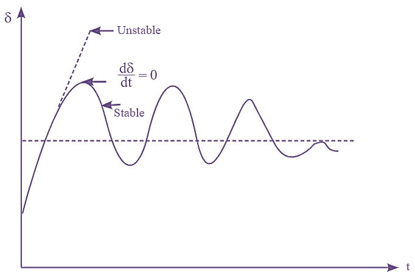
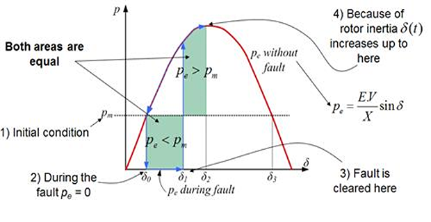

📈 System Stability & Control
System stability and control are critical for ensuring the power system operates under normal and disturbed conditions without losing synchronism.
🧭 1. Types of Stability
- Rotor Angle Stability: Synchronism of generators
- Voltage Stability: Ability to maintain acceptable voltages
- Frequency Stability: Balance between generation and load
Rotor angle stability is often analyzed using swing equations and equal-area criterion.
🔄 2. Small-Signal vs Transient Stability
- Small-Signal: Stability under small disturbances (e.g., load variation)
- Transient: Stability after large disturbances (e.g., short circuits)
🧮 3. Swing Equation
Describes generator rotor motion:
M \frac{d^2\delta}{dt^2} = P_m - P_e
\delta = Rotor angleP_m = Mechanical inputP_e = Electrical output

📊 4. Equal-Area Criterion
Used to determine transient stability following a disturbance.

⚙️ 5. Excitation & Governor Systems
- Exciter: Regulates generator voltage
- Governor: Regulates generator frequency via turbine control
🛰️ 6. Power System Stabilizer (PSS)
PSS improves damping of rotor oscillations by adjusting excitation based on speed deviations.
🛠️ 7. FACTS Devices
Flexible AC Transmission Systems (FACTS) control power flow and improve stability:
- SVC: Static Var Compensator
- STATCOM: Static Synchronous Compensator
- UPFC: Unified Power Flow Controller
🧪 8. Simulation Example (Stability)
📘 Quiz
Q1: What does the swing equation model?
Answer: The dynamic rotor angle motion of a generator.
Q2: What is the role of a Power System Stabilizer?
Answer: To damp oscillations by modulating excitation.
Q3: What is the equal-area criterion used for?
Answer: Determining transient stability after faults.
← Back to Power track